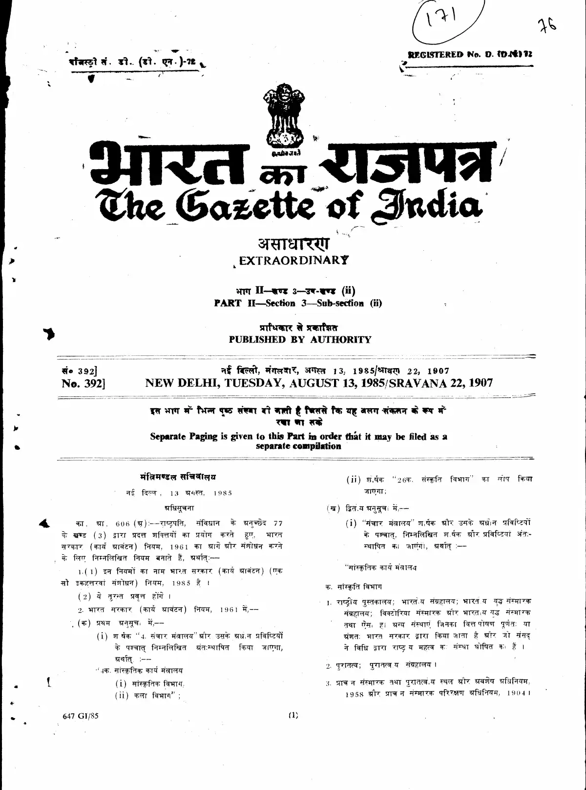
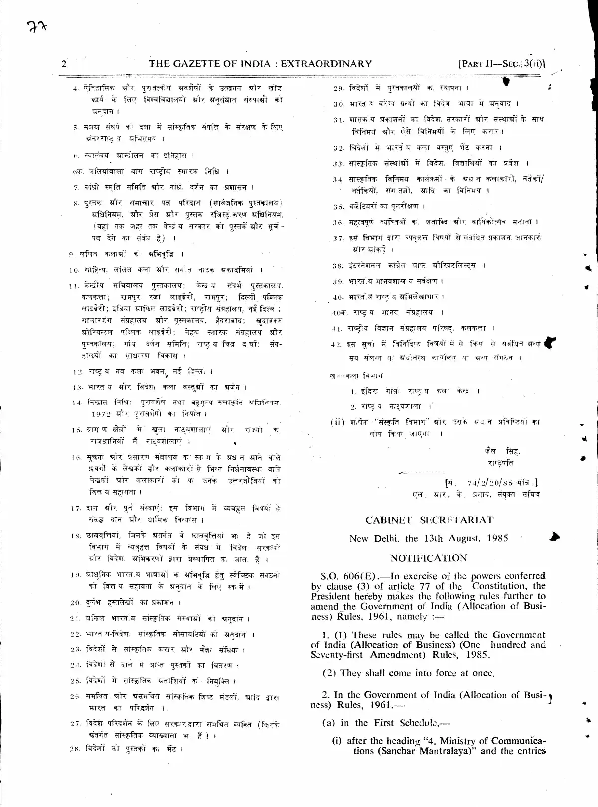
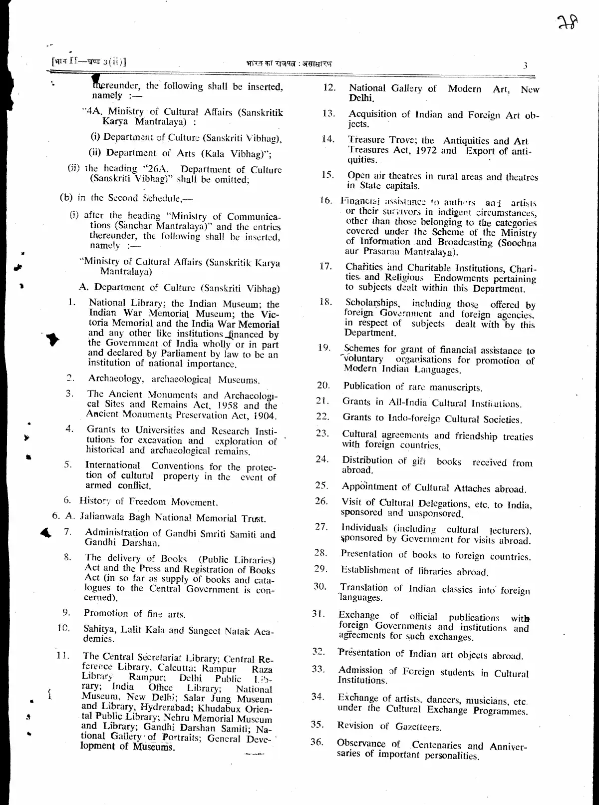
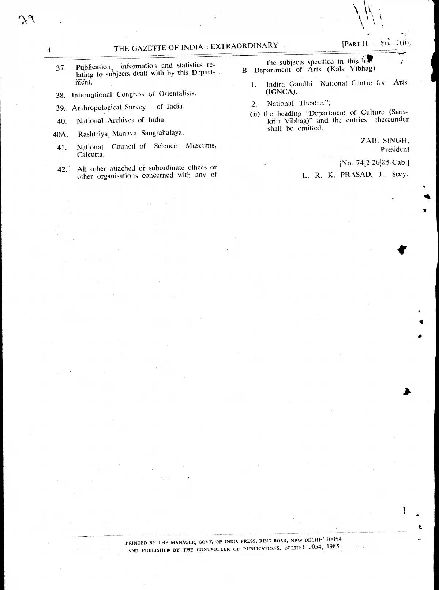

Amendment #171 (S.O. 606(E), 1985)
4 changes: 2 to the First Schedule, 2 to the Second Schedule. 4 applied
What it did to the ministries
- renamedDepartment of Culture is renamed Ministry of Cultural Affairs change 1, 2, 3, 4 · histories: Cultural Affairs
The order, page by page
Page 1 of 4

Page 2 of 4

1after Schedule 1 › Ministry of Communications
- 4A. Ministry of Cultural Affairs
- i. Department of Culture
- ii. Department of Arts
applied at schedule 1 › ministry 4A in the Rules after #171
new extra
Page 3 of 4

23Schedule 1 › Department of Culture
applied at schedule 1 › department 26A in the Rules after #171
after Schedule 2 › Ministry of Communications
- Ministry of Cultural Affairs
- A. Department of Culture
- 1. National Library; the Indian Museum; the Indian War Memorial Museum; the Victoria Memorial and the India War Memorial and any other like institutions financed by the Government of India wholly or in part and declared by Parliament by law to be an institution of national importance.
- 2. Archaeology, archaeological Museums ci
- 3. The Ancient Monuments and Archaeologicri cal Sites and Remains Act, 1958 and the Ancient Monuments Preservation Act, 1904.
- 4. Grants to Universities and Research Institutions for excavation and exploration of historical and archaeological remains. .5. International Conventions for the protection of cultural property in the event of armed conflict.
and 42 more
- 6. History of Freedom Movement.
- 6. A. Jalianwala Bagh National Memorial Trust.
- 7. Administration of Gandhi Smriti Samiti and Gandhi Darshan.
- 8. The delivery of Books (Public Libraries) Act and the Press and Registration of Books Act (in so far as supply of books and catalogues to the Central Government is concerned).
- 9. Promotion of fine arts.
- 10. Sahitya, Lalit Kala and Sangeet Natak Academies.
- 11. The Central Secretariat Library; Central Reference Library, Calcutta; Rampur Raza Library Rampur; Delhi Public Library; India Office Library; National Museum, New Delhi; Salar Jung Museum and Library, Hydrerabad; Khudabux Oriental Public Library; Nehru Memorial Muscum and Library; Gandhi Darshan…
- 12. National Gallery of Modern Art, New Delhi.
- 13. Acquisition of Indian and Foreign Art objects.
- 14. Treasure Trove; the Antiquities and Art Treasures Act, 1972 and Export of antiquities.
- 15. Open air theatres in rural areas and theatres in State capitals.
- 16. Financial assistance to authors and artists or their survivors in indigent circumstances other than those belonging to the categories covered under the Scheme of the Ministry of Information and Broadcasting (Soochna aur Prasaran Mantralaya).
- 17. Charities and Charitable Institutions, Charities and Religious Endowments pertaining to subjects dealt within this Department.
- 18. Scholarships, including those offered by foreign Government and foreign agencies. in respect of subjects dealt with by this Department.
- 19. Schemes for grant of financial assistance to voluntary organisations for promotion of Modern Indian Languages.
- 20. Publication of rare manuscripts.
- 21. Grants in All-India Cultural Institutions.
- 22. Grants to Indo-foreign Cultural Societies.
- 23. Cultural agreements and friendship treaties with foreign countries.
- 24. Distribution of gift books received from abroad.
- 25. Appointment of Cultural Attaches abroad.
- 26. Visit of Cultural Delegations, etc. to India sponsored and unsponsored.
- 27. Individuals (including cultural lecturers) sponsored by Government for visits abroad.
- 28. Presentation of books to foreign countries.
- 29. Establishment of libraries abroad.
- 30. Translation of Indian classics into foreign languages.
- 31. Exchange of official publications with foreign Governments and institutions and agreements for such exchanges.
- 32. Presentation of Indian art objects abroad.
- 33. Admission of Foreign students in Cultural Institutions.
- 34. Exchange of artists, dancers, musicians, etc. under the Cultural Exchange Programmes.
- 35. Revision of Gazetteers.
- 36. Observance of Centenaries and Anniversaries of important personalities. [PART II SC. 3(ii)]
- 37. Publication, information and statistics relating to subjects dealt with by this Department.
- 38. International Congress of Orientalists.
- 39. Anthropological Survey of India.
- 40. National Archives of India.
- 40A. Rashtriya Manava Sangrahalaya.
- 41. National Council of Council of Science Muscums Calcutta.
- 42. All other attached or subordinate offices or other organisations concerned with any of PRINTED BY THE MANAGER, GOVT. OF INDIA the subjects specified in this
- B. Department of Arts
- 1. Indira Gandhi National Centre for Arts (IGNCA).
- 2. National Theatre.
applied at schedule 2 › ministry Ministry of Cultural Affairs in the Rules after #171
read page break
Page 4 of 4

4Schedule 2 › Department of Culture
applied at schedule 2 › ministry in the Rules after #171
How this document was read
From the Government of India (Allocation of Business) Rules, 1961 and their amendments, as published by the Cabinet Secretariat (cabsec.gov.in), read by orgpedia. The readings of the older scanned gazettes have known gaps.